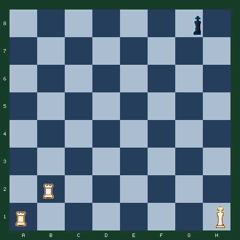

7月27日 · 晚报 · 战术组合
两辆车，五步把王赶下楼梯
不是寻找一步将杀，而是让两辆车轮流封锁横线，连续五步压缩黑王的空间。
难度 3/5 · 预计 6 分钟 · 5 次关键选择 · 主题：双车阶梯与连续强制着
故事引入
双车配合像两扇交替关闭的门：一辆车将军，另一辆车守住退路，然后双方交换角色。看懂这种节奏，比背诵最后的将杀格更重要。
本题不要求第五步立刻结束棋局。你的目标是连续五次保持将军，把黑王从第八横线赶到第四横线，并保持两车互相错层保护。
阶梯将杀为什么适合初学者
欧洲儿童棋课常把双车逼王画成楼梯。每次将军都把王向下赶一层，学生能直接看到控制空间如何逐步缩小，也能理解重子为什么需要协作。
今日局面
白方走五步，用双车阶梯把黑王逐层向下驱赶。

行棋方：白方 · FEN：6k1/8/8/8/8/8/1R6/R6K w - - 0 1
今日问题
连续五步保持将军
让两辆车交替前进。每一步都要将军，并且不要让两车站到同一条容易被王攻击的线上。
答案与逐步讲解
第 1 步：b2b8 · 对手回应 g8h7
第一步正确：Rb8+ 封住第八横线，黑王被迫走向 h7。
第 2 步：a1a7 · 对手回应 h7g6
第二步正确：Ra7+ 接过将军任务，b8 的车则守着上一层。
第 3 步：b8b6 · 对手回应 g6f5
第三步正确：Rb6+ 再次错层前进，两辆车像交替落下的闸门。
第 4 步：a7a5 · 对手回应 f5e4
第四步正确：Ra5+ 把王继续赶到第四横线，车之间始终保持一层距离。
第 5 步：b6b4
第五步正确：Rb4+ 完成五层阶梯。黑王空间继续缩小，白方下一阶段再用王封住侧面。
完成总结
五步阶梯完成。你没有追着王乱跑，而是让两辆车轮流控制横线，把活动空间一层层切掉。
常见错误
如果走 b2b7
Rb7 没有直接将军，黑王会获得主动靠近或逃向中心的时间。阶梯的每一步都应保持强制性。
如果走 a1a8
Ra8 与另一辆车挤在同一横线，没有形成新的封锁层。两车应该错开一层。
复盘：一车推王，一车封路
- Rb8+、Ra7+ 先建立第一组错层封锁。
- Rb6+、Ra5+ 重复同一结构，而不是每步重新发明计划。
- Rb4+ 说明战术组合可以以获得稳定结构为目标，不一定立即将杀。
- 真正完成将杀前，白王还要靠近并保护最前方的车。
带走一句：
连续强制着的价值在于重复可靠结构：一枚棋子制造威胁，另一枚棋子封住退路。
常见疑问
Q：为什么不直接追着王走？
A：直接靠近王容易让车失去保护。阶梯法不是追王，而是切掉整条横线，让王自己被迫后退。
Q：两辆车为什么要错开？
A：错开一层时，一车将军、另一车封住回头路。站在同一层会浪费一辆车的控制力。
Q：走完五步为什么还没结束？
A：五步目标是学会逼王结构，不是强行把完整残局压缩成一道将杀题。接下来还需要白王协助封住侧面。
想亲自走一遍这盘棋？
点击下方链接进入互动版，可以点击或拖动走棋，每一步都有即时红绿反馈和教练讲解。
棋刻 Chess Moment · 每天三分钟，想明白一步棋